전자계산기기능사 (2013-10-12 기출문제)
1과목: 전기전자공학
1. 베이스 접지증폭기에서 전류증폭률이 0.98인 트랜지스터를 이미터 접지 증폭기로 사용할 때 전류 증폭률은?
- 0.98
- 9.5
- 49
- 100
(정답률: 53%)

2. 이상적인 상태에서 100% 변조된 AM파는 무변조파에 비하여 출력이 몇 배로 되는가?
- 1
- 1.5
- 2
- 2.5
(정답률: 54%)
3. 다음 그림은 펄스 파형을 나타낸 것이다. 그림에서 높이 a를 무엇이라 하는가?
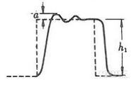
- 언더슈트
- 스파이크
- 오버슈트
- 새그
(정답률: 77%)
4. 증폭기에서 바이어스가 적당하지 않으면 일어나는 현상으로 옳지 않은 것은?
- 이득이 낮다.
- 파형이 일그러진다.
- 전력손실이 많다.
- 주파수 변화 현상이 일어난다.
(정답률: 45%)
5. 그림과 같은 회로는 무엇인가?(단, Vi는 직사각형 파이다.)
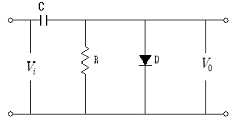
- 클리핑 회로
- 클램핑 회로
- 콘덴서 입력형 필터회로
- 반파 정류회로
(정답률: 63%)
6. 차동증폭기의 동상신호제거비(CMRR)에 대한 설명으로 가장 적합한 것은?
- CMRR이 클수록 차동증폭기 성능이 좋다.
- 동상신호이득이 클수록 CMRR이 증대한다.
- 차동신호이득이 작을수록 CMRR이 증대한다.
- CMRR이 크면 차동증폭기의 잡음 출력이 크다.
(정답률: 46%)
7. 다음과 같은 V-I 특성을 나타내는 스위칭 소자는?
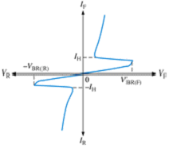
- SCR
- UJT
- 터널 다이오드
- DIAC
(정답률: 52%)
8. 연산증폭기의 정확도를 높이기 위한 조건으로 옳지 않은 것은?
- 주파수 차단 특성이 좋아야 한다.
- 큰 증폭도와 좋은 안정도가 필요하다.
- 특정 주파수에서 주파수 보상회로를 사용한다.
- 많은 양의 양되먹임을 안정되게 걸 수 있어야 한다.
(정답률: 52%)
9. 트랜지스터 바이어스 회로방식 중 안정도가 가장 높은 것은?
- 혼합 바이어스
- 전류 궤환 바이어스
- 고정 바이어스
- 자기 바이어스
(정답률: 35%)
10. 증폭기의 출력에서 기본파 전압이 50V, 제2고조파 전압이 4V, 제3고조파 전압이 3V이면 이 증폭기의 왜율은?
- 5%
- 10%
- 15%
- 20%
(정답률: 48%)
2과목: 전자계산기구조
11. 비수치적 자료 중에서 필요 없는 부분을 지워버리고 남은 비트만 가지고 처리하기 위해 사용하는 연산은?
- OR 연산
- AND 연산
- SHIFT 연산
- COMPLEMENT 연산
(정답률: 61%)
12. AND 연산에서 레지스터 내의 어느 비트 또는 문자를 지울것인지를 결정하는 것은?
- check bit
- mask bit
- sign bit
- parity bit
(정답률: 70%)
13. 다음에 수행될 명령어의 주소를 나타내는 것은?
- Accumulator
- Instruction
- Stack Pointer
- Program Counter
(정답률: 69%)
14. 미국에서 개발한 표준 코드로서 개인용 컴퓨터에 주로 사용되며, 7비트로 구성되어 128가지의 문자를 표현할 수 있는 코드는?
- BCD
- ASCII
- UNICODE
- EBCDIC
(정답률: 90%)
15. 주소지정방식 중 명령어 내의 오퍼랜드부에 실제 데이터가 저장된 장소의 번지를 가진 기억장소의 번지를 표현하는 것은?
- 계산에 의한 주소지정방식
- 직접 주소지정방식
- 간접 주소지정방식
- 임시적 주소지정방식
(정답률: 62%)
16. 순차접근저장매체(SASD)에 해당하는 것은?
- 자기 드럼
- 자기 테이프
- 자기 디스크
- 자기 코어
(정답률: 83%)
17. 입.출력 제어 방식에 해당하지 않는 것은?
- 인터페이스 방식
- 채널에 의한 방식
- DMA 방식
- 중앙처리장치에 의한 방식
(정답률: 44%)
18. FIFO와 관련되는 선형 자료구조는?
- 큐
- 스택
- 그래프
- 트리
(정답률: 62%)
19. 사진이나 그림 등에 빛을 쪼여 반사되는 것을 판별하여 복사하는 것처럼 이미지를 입력하는 장치는?
- 플로터
- 마우스
- 프린터
- 스캐너
(정답률: 82%)
20. 시스템 소프트웨어가 아닌 것은?
- 포토샵
- 운영체제
- 컴파일러
- 로더
(정답률: 79%)
21. CPU가 어떤 작업을 수행하고 있는 중에 외부로부터의 긴급 서비스 요청이 있으면 그 작업을 잠시 중단하고 요구된 일을 먼저 처리한 후에 다시 원래의 작업을 수행하는 것은?
- 시분할
- 인터럽트
- 분산처리
- 채널
(정답률: 79%)
22. 입.출력 겸용 장치에 해당하는 것은?
- 터치 스크린
- 트랙볼
- 라이트 펜
- 디지타이저
(정답률: 75%)
23. 컴퓨터나 단말기 내부에서 사용하는 디지털 신호를 전송하기에 편리한 아날로그로 변화시켜주고, 전송받은 아날로그 신호를 다시 컴퓨터에 사용되는 디지털 신호로 변환시켜 주는 장치는?
- 통신 회선
- 단말기
- 모뎀
- 통신 제어장치
(정답률: 83%)
24. 하나의 논리 소자에서 출력으로 나온 신호를 다른 논리 소자에 입력할 수 있는 선의 개수를 말하는 것은?
- 팬-인(Fan-in)
- 팬-아웃(Fan-out)
- 잡음 한계(Noise Margin)
- 전력 소모(Power Diddipation)
(정답률: 69%)
25. 입력단자 하나로 펄스가 입력되면 현재와 반대의 상태로 바뀌게 하는 토글(toggle) 상태를 만드는 회로는?
- T 플립플롭
- R 플립플롭
- RS 플립플롭
- JK 플립플롭
(정답률: 84%)
26. 고정 소수점 표현방식 중 음수를 표현하는 방식이 아닌 것은?
- 부호와 절대치
- 부호와 0의 보수
- 부호와 1의 보수
- 부호와 2의 보수
(정답률: 74%)
27. 2진수 (01101001)2 이 1의 보수기를 통과하였다. 누산기에 보관된 내용은?
- 10010110
- 01101001
- 00000000
- 11111111
(정답률: 85%)
28. 최대 데이터 전송률을 결정하는 요인으로 전송시스템의 성능을 평가하는 가장 중요한 변수는?
- 지연 왜곡
- 신호 대 잡음비
- 감쇠 현상
- 증폭도
(정답률: 56%)
29. 입력 단자와 출력 단자는 각각 하나이며, 입력 단자가 1이면 출력 단자는 0이 되고, 입력 단자가 0이면 출력 단자가 1이 되는 회로는?
- OR 회로
- NAND 회로
- AND 회로
- NOT 회로
(정답률: 72%)
30. 기억된 프로그램의 명령을 하나씩 읽고 해독하여 각 장치에 필요한 지시를 하는 기능은?
- 입력 기능
- 제어 기능
- 연산 기능
- 기억 기능
(정답률: 79%)
3과목: 프로그래밍일반
31. 프로그래밍 언어의 해독 순서로 옳은 것은?
- 링커 - 로더 - 컴파일러
- 컴파일러 - 링커 - 로더
- 로더 - 컴파일러 - 링커
- 로더 - 링커 - 컴파일러
(정답률: 75%)
32. 고급 언어의 특징으로 옳지 않은 것은?
- 기종에 관계없이 사용할 수 있어 호환성이 높다.
- 2진수 형태로 이루어진 언어로 전자계산기가 직접 이해할 수 있는 형태의 언어이다.
- 하드웨어에 관한 전문지식이 없어도 프로그램 작성이 용이하다.
- 프로그래밍 작업이 쉽고 용이하다.
(정답률: 72%)
33. C 언어에서 데이터 형식을 규정하는 서술자에 대한 설명으로 옳지 않은 것은?
- %e : 지수형
- %c : 문자열
- %f : 소수점 표기형
- %u : 부호 없는 10진 정수
(정답률: 51%)
34. C 언어의 특징으로 옳지 않은 것은?
- 이식성이 높은 언어이다.
- 인터프리터 방식의 언어이다.
- 자료의 주소를 조작할 수 있는 포인터를 제공한다.
- 시스템 소프트웨어를 개발하기에 편하다.
(정답률: 70%)
35. 로더의 기능으로 거리가 먼 것은?
- Translation
- Allocation
- Linking
- Loading
(정답률: 68%)
36. 언어 번역 프로그램에 해당하지 않는 것은?
- 인터프리터
- 로더
- 컴파일러
- 어셈블러
(정답률: 76%)
37. 고급언어로 작성된 프로그램을 구문분석하여, 각각의 문장을 문법 구조에 따라 트리 형태로 구성한 것은?
- 어휘 트리
- 목적 트리
- 링크 트리
- 파스 트리
(정답률: 60%)
38. 운영체제의 운영방식 중 다음 설명에 해당하는 것은?
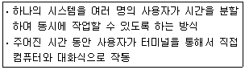
- 일괄 처리 시스템
- 다중 시스템
- 실시간 처리 시스템
- 시분할 시스템
(정답률: 74%)
39. 프로그램 문서화의 목적과 거리가 먼 것은?
- 프로그램 개발 과정의 요식 행위화
- 프로그램 개발 중 추가 변경에 따른 혼란 방지
- 프로그램 이관이 용이함
- 프로그램 유지 보수의 효율화
(정답률: 69%)
40. 프로그램이 수행되는 동안 변하지 않는 값을 의미하는 것은?
- Variable
- Comment
- Constant
- Pointer
(정답률: 59%)
4과목: 디지털공학
41. 비동기식 6진 리플 카운터를 구성하려고 한다. T 플립플롭이 최소한 몇 개 필요한가?
- 3
- 4
- 5
- 6
(정답률: 68%)
42. 시간 펄스나 제어를 위한 펄스의 수를 세는 회로를 무엇이라고 하는가?
- 제어 회로
- 명령 회로
- 계수 회로
- 펄스 회로
(정답률: 74%)
43. 불 대수의 기본정리 중 옳지 않은 것은?
- A ㆍ 0 = 0
- A ㆍ A = A
- A + A = A
- A + 1 = A
(정답률: 73%)
44. JK-FF에서 J=K=1 인 상태이면 클록이 “0” 상태로 갈 때 Q 출력은 어떻게 되는가?
- 변화 없음
- 세트
- 리셋
- 반전
(정답률: 76%)
45. 다음과 같은 회로의 명칭은?
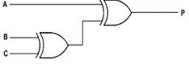
- 비교 회로
- 다수결 회로
- 인코더 회로
- 패리티 발생 회로
(정답률: 53%)
46. JK 플립플롭의 두 입력을 하나로 묶어서 만들며, 보수가 출력되는 플립플롭은?
- RS 플립플롭
- 마스터-슬레이브 플립플롭
- D 플립플롭
- T 플립플롭
(정답률: 48%)
47. 10진수 8이 기억되어 있는 5비트 시프트 레지스터를 좌측으로 1비트 시프트 했을 때 기억되는 값은?
- 2
- 4
- 8
- 16
(정답률: 58%)
48. 멀티플렉서에서 4개의 입력 중 1개를 선택하기 위해 필요한 입력 선택 제어선의 수는?
- 1개
- 2개
- 3개
- 4개
(정답률: 68%)
49. 전원 공급에 관계없이 저장된 내용을 반영구적으로 유지하는 비휘발성 메모리는?
- RAM
- ROM
- SRAM
- DRAM
(정답률: 72%)
50. 클록 펄스가 들어올 때 마다 플립플롭의 상태가 반전되는 것을 무엇이라고 하는가?
- 리셋
- 클리어
- 토글
- 트리거
(정답률: 79%)
51. 다음 진리표를 만족하는 게이트는?
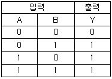
- OR 게이트
- AND 게이트
- NOT 게이트
- XOR 게이트
(정답률: 71%)
52. 회로의 안정 상태에 따른 멀티바이브레이터의 종류가 아닌 것은?
- 비안정 멀티바이브레이터
- 주파수 안정 멀티바이브레이터
- 단안정 멀티바이브레이터
- 쌍안정 멀티바이브레이터
(정답률: 78%)
53. 다음 그림에서 논리식은?
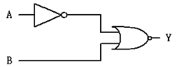
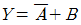
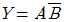
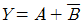
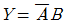
(정답률: 39%)
54. 논리식 Y = AB + B를 간소화 시킨 것은?
- Y = A
- Y = B
- Y = AB
- Y = A+B
(정답률: 60%)
55. 병렬 계수기라고도 말하며 계수기의 각 플립플롭이 같은 시간에 트리거 되는 계수기는?
- 링 계수기
- 동기형 계수기
- 10진 계수기
- 비동기형 계수기
(정답률: 57%)
56. 다음 논리IC 중 속도가 가장 빠른 것은?
- DTL
- ECL
- CMOS
- TTL
(정답률: 72%)
57. 반가산기에서 입력 A=1이고 B=0이면 출력 합(S)과 올림수(C)는?
- S=0, C=0
- S=1, C=0
- S=1, C=1
- S=0, C=1
(정답률: 80%)
58. 2×4 디코더에 사용되는 AND 게이트의 최소수는?
- 1개
- 2개
- 3개
- 4개
(정답률: 41%)
59. -13을 8비트 1의 보수방식으로 표현하면?
- 11100010
- 11101010
- 11110110
- 11110010
(정답률: 44%)
60. 배타적-NOR의 출력이 0 일때는 언제인가?
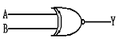
- A,B 모두 0일 때
- A,B 모두 1일 때
- A,B가 서로 다를 때
- A,B가 서로 같을 때
(정답률: 50%)
베이스 접지증폭기에서 전류증폭률이 0.98인 트랜지스터를 이미터 접지 증폭기로 사용할 때, 전류증폭률은 약 49입니다. 이는 전류증폭기에서 출력 전류가 입력 전류의 49배가 되기 때문입니다.
전류증폭률은 일반적으로 다음과 같은 공식으로 계산됩니다.
전류증폭률 = (출력 전류 / 입력 전류)
따라서, 전류증폭기에서 출력 전류가 입력 전류의 49배가 되므로, 전류증폭률은 49이 됩니다.